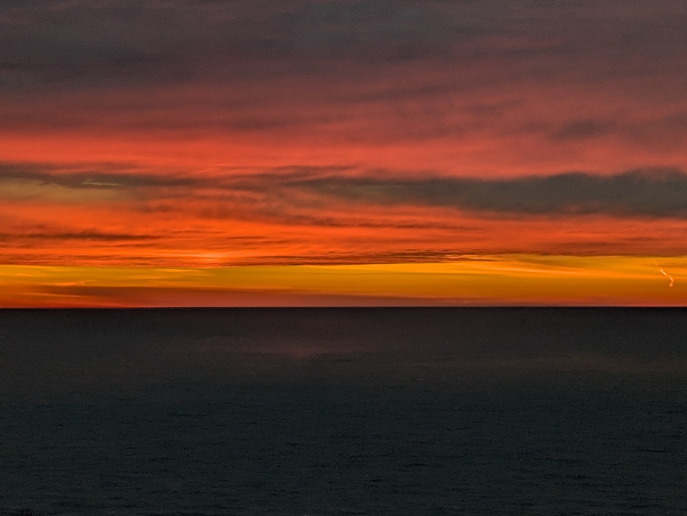
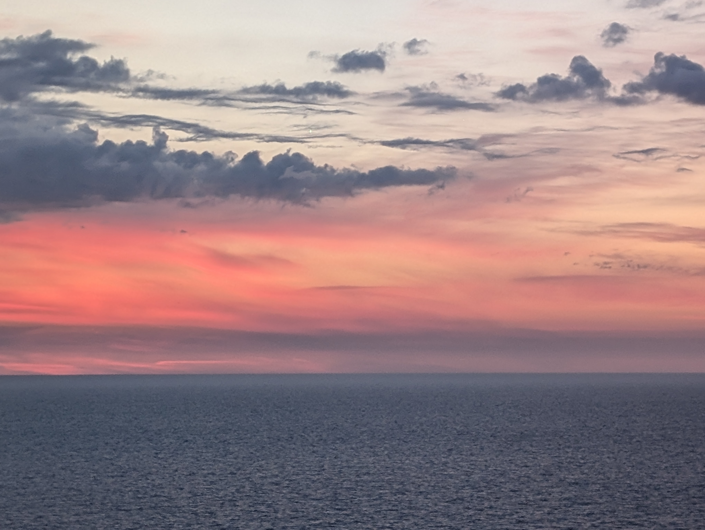
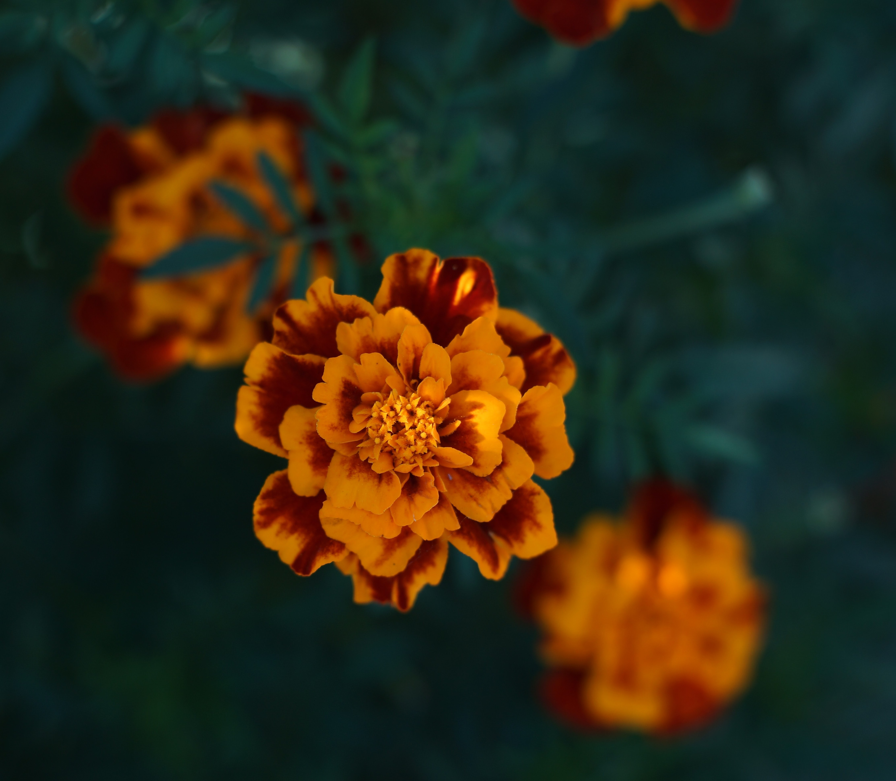

Gallery
Observational photography from Chicago lakefront walks, changing Midwestern skies, and macro botanical studies.





Observational photography from Chicago lakefront walks, changing Midwestern skies, and macro botanical studies.


